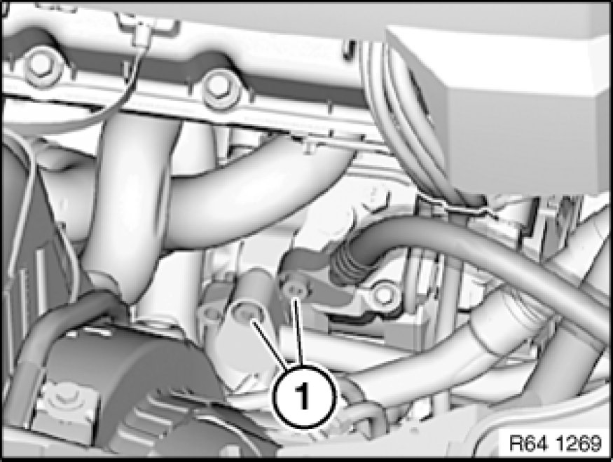
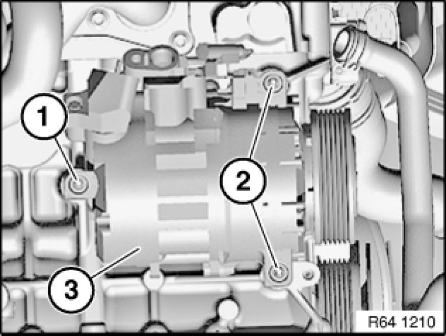

Replacing A/C System Compressor (N52K)
64 52 521 - Replacing A/C system compressor (N52K)

Special tools required:
- 32 1 270 32 1 270 Plugs (Set)

Warning!
Risk of injury!
Refrigerant circuit is under high pressure!
Follow safety instructions for handling R 134a refrigerant.
Avoid contact with refrigerant and refrigerant oil.
Follow safety instructions for handling refrigerant oil [1][2]Safety Instructions for Handling Refrigerant Oil.

Important!
Risk of damage!
Restart engine only when A/C system has been correctly filled.
Read and comply with notes Instructions for Compressor Replacement on replacing compressor.
Follow instructions Removal and Replacement for opening and replacing parts in refrigerant circuit.
If A/C system is opened for more than 24 hours:
Replace desiccant insert Removing and Installing/Replacing Dryer Bottle for Air Conditioner for A/C system.

Necessary preliminary tasks:
- Drawing off Drawing off, Evacuating and Filling A/C System (R 134a), evacuating and filling the A/C system is not included in the time value given for this work operation
- Remove A/C compressor drive belt
- Remove coolant thermostat Service and Repair

Release screws (1) and disconnect plug connection on compressor.
Disconnect pressure and suction lines.
Installation Note:
Replace all sealing rings and moisten with refrigerant oil.
Tightening torque 64 52 1AZ [1][2]Compressor HVAC.
Important!
Seal openings or lines on compressor with special tool 32 1 270 32 1 270 Plugs (Set) to prevent escape of media and fouling.

Note:
Secure compressor (3) against falling out.
Release screw (1).
Release screws (2) and feed out compressor towards front.
Tightening torque 64 52 3AZ [1][2]Compressor HVAC.
After installation:
- Fill and vent cooling system
- Evacuate and fill A/C system